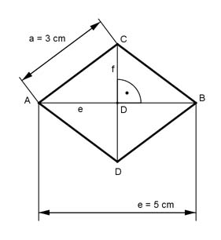

Pythagoras Aufgabe 46 Berechnen Sie die Fläche A einer Raute in cm², wenn a = 3 cm und e = 5 cm.  Bei einer Raute stehen die beiden Diagonalen senkrecht aufeinander und halbieren sich. Satz von Pythagoras im Dreieck DBC: e f e a² = (---)² + (---)² | -(---)² 2 2 2 f e (---)² = a² - (---)² 2 2 f (---)² = 3² cm² - 2,5² cm² = 2,75 cm² 2 f² ---- = 2,75 |*4 4 f² = 10 cm² |√ f = 3,3 cm f e --- * --- 2 2 f * e f * e 3,3 cm * 5 cm A = 4 * ---------- = 2 * ------- = ------- = --------------- = 8,3 cm² 2 4 2 2